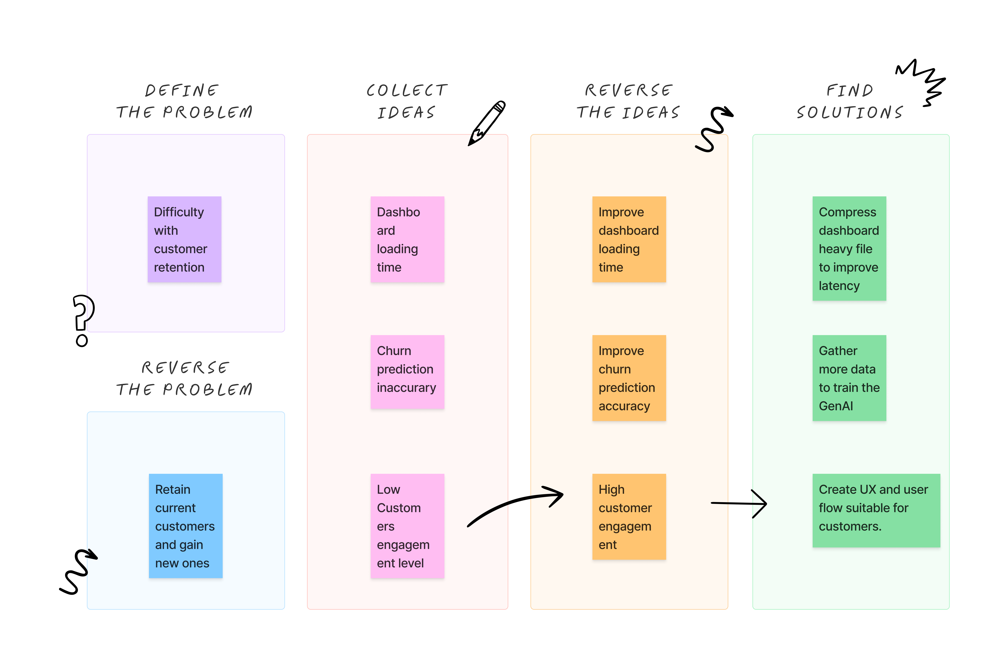
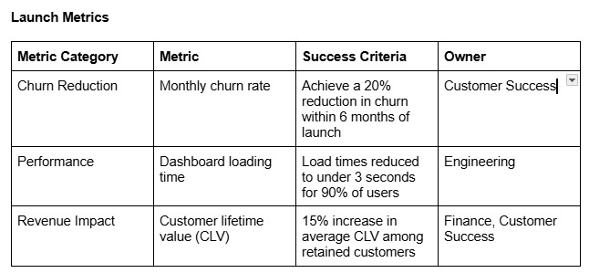
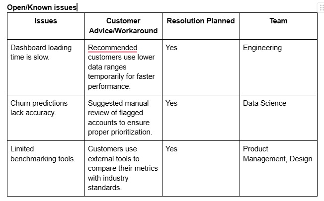

SaaS Retention Pro - A Customer Retention Dashboard
Scope of the Project
The SaaS Retention Pro dashboard was developed to tackle the pressing issue of customer churn in a subscription-based SaaS platform for small-to-medium businesses (SMBs). The project aimed to provide customer success teams with a centralized tool that delivered real-time churn predictions, customer health scores, and engagement analytics. By integrating predictive models and actionable insights into the existing platform, the solution sought to enable proactive retention strategies, reduce manual efforts, and enhance customer satisfaction.
The Challenge
Customer churn posed a significant challenge for the platform, particularly among SMB customers who often struggled with budget constraints and resource limitations. Existing retention efforts relied heavily on reactive measures, such as contacting churned accounts or manually consolidating fragmented data from various tools, which were both time-intensive and ineffective. The lack of predictive capabilities further exacerbated the issue, leaving teams unable to identify or address churn risks before they materialized.
Phase 1: Discovery and Problem Definition
Goal: Understand the root causes of customer churn and align with business objectives.
- Stakeholder Engagement: Conducted meetings with key stakeholders (customer success, sales, marketing, and executives) to understand their pain points, priorities, and goals for improving retention.
○ Outcome: Identified churn as a top priority metric impacting revenue.
- Data Analysis: Worked with data analysts to review customer churn metrics, segment user behavior, and identify trends. Key metrics analyzed included churn rate, customer lifetime value (CLV), and Net Promoter Score (NPS).
○ Outcome: Discovered that churn was highest among small-to-medium business (SMB) clients after the first 3 months.
- Customer Feedback: Conducted interviews and surveys with recently churned and retained customers to understand dissatisfaction drivers and feature gaps.
○ Outcome: Identified a need for proactive, data-driven insights to help customers derive more value from the platform.
Phase 2: Ideation and Roadmap Development
Goal: Define the solution, align the team, and plan the execution.
- Feature Ideation: Collaborated with cross-functional teams (engineering, data science, and UX/UI design) to brainstorm features for a retention dashboard. Key proposed features included:
○ Real-time churn prediction based on usage patterns.
○ Alerts for at-risk customers.
○ Metrics such as engagement scores and renewal probability. - Prioritization: Used frameworks like RICE (Reach, Impact, Confidence, Effort) to prioritize features that would have the most significant impact on reducing churn.
○ Outcome: Focused on delivering a Minimum Viable Product (MVP) with predictive churn metrics and customer engagement alerts.
- Roadmap Creation: Developed a detailed roadmap with timelines, deliverables, and milestones for each phase of the dashboard's development.
○ Outcome: Gained buy-in from stakeholders on the roadmap and set clear expectations for delivery.
Phase 3: Design and Prototyping
Goal: Create a user-friendly design that aligns with customer needs and business goals.
- Wireframing: Created low-fidelity wireframes in Figma to visualize the layout and flow of the dashboard.
○ Included sections for:
■ A customer health scorecard.
■ Key engagement metrics.
■ Alerts and recommended actions for at-risk customers. - User Journey Mapping: Designed customer journeys to ensure that the dashboard seamlessly integrated into the workflows of customer success managers and sales teams.
○ Outcome: Validated that the dashboard would streamline processes rather than add complexity.
- Prototyping: Developed a high-fidelity interactive prototype, incorporating feedback from internal teams to refine the design.
○ Outcome: Finalized a prototype ready for development.
Phase 4: Development and Integration
Goal: Build and integrate the dashboard into the SaaS platform.
- Model Development: Partnered with data science teams to build a machine learning model that predicted churn based on historical data and behavioral trends.
○ Features included:
■ Usage frequency.
■ Feature adoption rates.
■ Customer support interactions. - Engineering Collaboration: Worked with the engineering team to integrate the churn prediction model and dashboard into the SaaS platform. APIs were developed to fetch real-time data and populate the dashboard.
○ Outcome: Ensured a scalable and reliable solution by conducting regular check-ins and sprint reviews.
- Agile Sprints: Followed Agile methodologies, breaking down development into two-week sprints with clearly defined deliverables.
○ Outcome: Delivered an MVP within the planned timeline.
Phase 5: Testing and Iteration
Goal: Ensure the dashboard is user-friendly, accurate, and delivers value.
- A/B Testing: Conducted A/B tests with two groups:
○ Group A: Customer success teams using the new dashboard.
○ Group B: Teams using existing tools.
○ Metrics tracked: churn rate changes, customer health score accuracy, and ease of use. - User Testing: Gathered feedback from customer success managers during live sessions to identify areas for improvement, including usability and feature clarity.
○ Outcome: Made iterative changes to the dashboard based on feedback, such as refining alert thresholds and improving navigation.
- Bug Fixes and Refinement: Collaborated with engineering to address issues discovered during testing.
○ Outcome: Delivered a polished and reliable product ready for launch.
Phase 6: Launch and Performance Monitoring

Goal: Deploy the dashboard and continuously measure its impact.
- Soft Launch: Rolled out the dashboard to a subset of users for final testing and feedback.
○ Outcome: Identified minor improvements before the full launch.
- Full Deployment: Released the dashboard to all users and provided training sessions for customer success teams to maximize adoption.
○ Outcome: High adoption rates and positive feedback from users.
- Impact Analysis: Monitored KPIs, including churn reduction, customer engagement, and satisfaction scores, to measure the dashboard's success.
○ Results: Reduced churn by 20% and increased customer satisfaction scores by 30%.
- Ongoing Iteration: Established a feedback loop with users to continually improve the dashboard based on new insights and evolving needs.
RISK MITIGATION
 The SaaS Retention Pro Dashboard successfully addressed customer churn challenges, reducing churn by 20% and increasing customer satisfaction by 30%. By equipping customer success teams with real-time insights and predictive analytics, the dashboard demonstrated the value of data-driven decision-making and proactive retention strategies.
Retrospective
Key factors contributing to the project's success included a customer-focused approach, informed by user research, and the flexibility of Agile methodologies, which allowed for iterative improvements. However, the retrospective revealed an opportunity for better collaboration with sales teams to align retention metrics with revenue goals.
Continuous Improvement
To ensure long-term impact, a continuous improvement plan was implemented, focusing on:
- Enhanced Predictive Models: Refining algorithms by incorporating additional data like customer sentiment and market trends to improve churn prediction accuracy.
- Feature Expansion: Adding benchmarking tools for customers to compare their metrics with industry standards.
- User Feedback Loops: Regularly collecting user feedback to prioritize feature enhancements.
- Scalability: Optimizing backend systems to support platform growth and larger datasets.